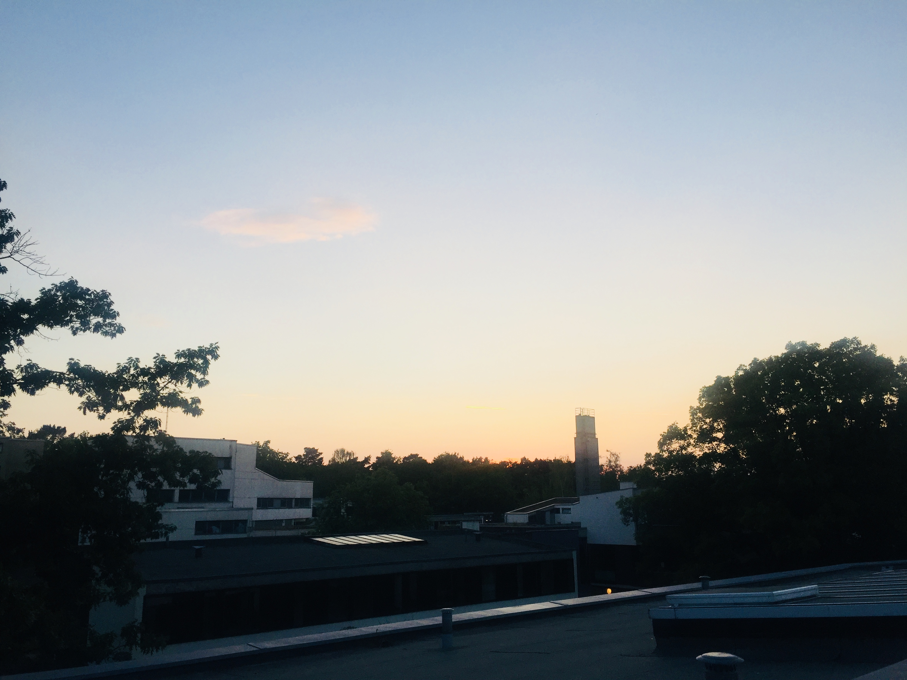

나는 휴학도 없이 또 졸업 유예도 없이 바로 대학교를 졸업했다. 나는 이런 나에게 2020년을 휴식의 한 해로, 선물 같은 일 년으로 정하고 더 새로운 경험을 많이 할 수 있길 원했다. 따지자면 초등학교 6년, 중학교 3년, 고등학교 3년 그리고 대학교 4년, 총 16년 동안 학교생활을 쉼 없이 해 온 나에게 자유를 주고 싶었다. 내 자아가 형성되고 가치관이 형성되는 동안 나는 항상 누군가 내게 제시한 과제와 목표를 부여받았고, 나는 그 과제를 수행하기 위해, 목표를 달성하기 위해 노력해왔다. 단 한 번도 온전히 나만의 의지로 내 삶을 살아본 적이 없는 느낌이었다. 따라서 2019년의 나는 2020년에는 세계 여행을 하리라 다짐했었다. 세계를 돌아다니며 내 마음이 향하는 곳이 어딘지, 무엇인지 알아보기 위해.
하지만 여행이 불가능해져버린, 언제 여행이 가능할지 장담조차 할 수 없는 이런 상황 속에서 나는 그냥 방치되어버렸다. 휴식을 위한 나의 시간들이 어떻게 흐르는지도 모르게 지나가버렸고, 그런 시간들 사이에서 나는 혼자 롤러코스터를 타는 하루하루를 보내게 되었다. 4개월 동안 나는 나름 다양한 일들을 했다. 책도 읽고, 피아노도 치고, 운동도 하고 그리고 요리도 했다. 가끔은 그림도 그렸고, 사진 정리도 했으며 지금 이렇게 블로그에 글도 쓰고 있다. 이 시간들 속에서 난 완전한 사람이었다.
다만 내가 이렇게 집중하는 시간의 밖에서 내 생각은 요동치기 시작했다. 현실을 마주하는 나는 너무나도 불완전한 사람이었다. 이미 취업을 해서 돈을 버는 친구와, 취업을 위해 노력하는 친구들의 이야기를 들으면서 내 삶이 너무나도 불안하기만 했다. 2020년을 시작할 때의 나의 생각과는 너무나도 다르게, 초조한 생각들이 내 머릿속을 지배하기 시작한 것이다. 내가 지금 이렇게 한량처럼 시간을 보내도 괜찮은 건지. 어쩌면 진짜 내가 시간만 낭비하고 있는 것이 아닐지. 이런 일상 속에서 내가 훗날 얻어 가는 게 있을지.
정리가 안되는 이런 생각들을 가지고 나는 이런 생각과 근심 속에서 잠시나마 머릿속을 비우고자 집중하기 위해 책을 꺼내 들었다.
